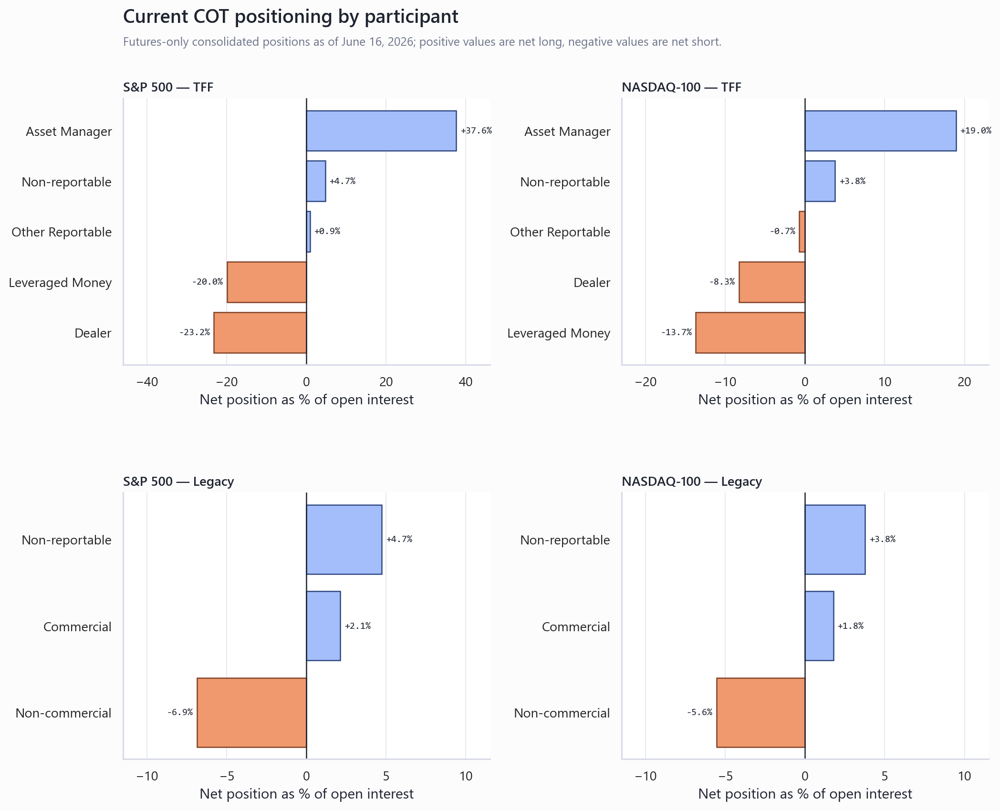
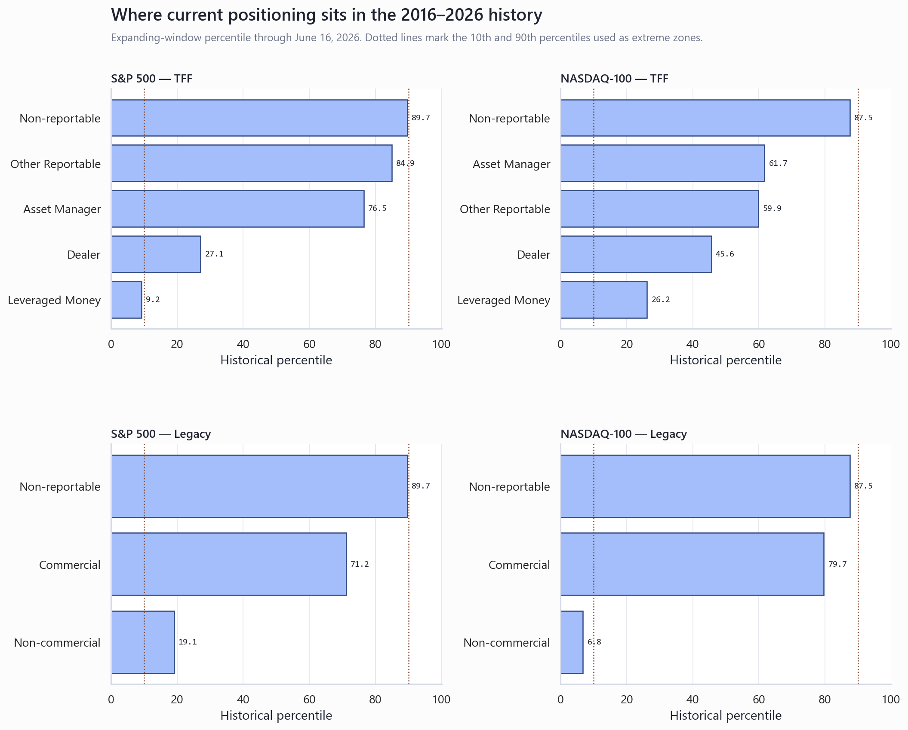

S&P 500 and Nasdaq-100 COT Read
Executive Summary
- Nasdaq has the clearer contrarian upside setup, but it is a squeeze setup—not clean risk-on. Legacy non-commercials are net short 20,866 contracts, only the 6.8th percentile of the 2016–2026 history, which triggers the local model’s +2.5 Risk-On signal. TFF simultaneously shows asset managers cutting net exposure by 13,304 contracts and non-reportables at the 87.5th percentile, so sponsorship is weaker and retail crowding is higher.
- S&P positioning is neutral-to-mixed. Asset managers remain heavily net long (+986,577; 37.6% of OI), while leveraged funds added 64,192 net shorts. Dealers became 59,630 contracts less net short and Legacy non-commercials covered 14,411 net shorts, but non-reportables are already at the 89.7th percentile.
- Do not over-read the sharp net/OI percentage moves this week. Consolidated open interest jumped 17.1% in S&P and 12.1% in Nasdaq during quarterly expiry/roll week. Absolute long/short changes are the cleaner conviction read.
What this report measures
S&P: institutions still own the trend, but the marginal flow is conflicted
TFF is not giving a clean directional signal. Asset managers barely changed their absolute net (+986,838 to +986,577), so their apparent 6.4-point collapse as a share of OI is almost entirely a rollover-denominator effect. The real weekly move was leveraged money: longs fell 11,546 while shorts rose 52,647, worsening the net short by 64,192. Dealer positioning moved the opposite way as dealer shorts fell 45,918.
Legacy confirms short covering, not fresh speculative buying. Non-commercial longs fell 5,510, but shorts fell more—19,921—so net positioning improved by 14,411 while remaining net short 180,143. Non-reportables added 17,757 net longs and sit at the 89.7th percentile, just below the model’s 90th-percentile crowding threshold.
| Report | Participant | Net contracts | Net / OI | Weekly net change | Long change | Short change | Hist. percentile |
|---|---|---|---|---|---|---|---|
| TFF | Asset Manager | 986,577 | +37.6% | -261 | -5,366 | -5,105 | 76.5 |
| TFF | Dealer | -609,648 | -23.2% | +59,630 | +13,712 | -45,918 | 27.1 |
| TFF | Leveraged Money | -523,882 | -20.0% | -64,192 | -11,545 | +52,647 | 9.2 |
| TFF | Other Reportable | 22,697 | +0.9% | -12,934 | -8,430 | +4,504 | 84.9 |
| TFF | Non-reportable | 124,255 | +4.7% | +17,757 | +21,918 | +4,161 | 89.7 |
| Legacy | Non-commercial | -180,143 | -6.9% | +14,411 | -5,510 | -19,921 | 19.1 |
| Legacy | Commercial | 55,887 | +2.1% | -32,169 | +338,692 | +370,861 | 71.2 |
| Legacy | Non-reportable | 124,255 | +4.7% | +17,757 | +21,918 | +4,161 | 89.7 |
Nasdaq: short crowding supports a squeeze, while TFF sponsorship weakens
Legacy gives the strongest signal in the four-way comparison. Non-commercials added 9,885 net shorts, driven by a 10,748 increase in shorts against only 863 added longs. Net exposure is -5.6% of OI and at the 6.8th percentile, a historically crowded short position. Commercials became 6,390 contracts more net long, adding contrarian support.
TFF blocks a simple bullish conclusion. Asset managers cut longs and added shorts, reducing net by 13,304. Leveraged funds covered 6,037 shorts and improved net by 5,286, but non-reportables added 3,495 net longs and remain above the TFF model’s 85th-percentile risk threshold. The result is a TFF Mixed, score -1.0 against a Legacy Risk-On, score +2.5.
| Report | Participant | Net contracts | Net / OI | Weekly net change | Long change | Short change | Hist. percentile |
|---|---|---|---|---|---|---|---|
| TFF | Asset Manager | 71,133 | +19.0% | -13,304 | -7,357 | +5,947 | 61.7 |
| TFF | Dealer | -31,125 | -8.3% | +3,828 | +10,003 | +6,175 | 45.6 |
| TFF | Leveraged Money | -51,468 | -13.7% | +5,286 | -751 | -6,037 | 26.2 |
| TFF | Other Reportable | -2,700 | -0.7% | +696 | -597 | -1,293 | 59.9 |
| TFF | Non-reportable | 14,160 | +3.8% | +3,495 | +7,977 | +4,482 | 87.5 |
| Legacy | Non-commercial | -20,866 | -5.6% | -9,885 | +863 | +10,748 | 6.8 |
| Legacy | Commercial | 6,706 | +1.8% | +6,390 | +19,031 | +12,641 | 79.7 |
| Legacy | Non-reportable | 14,160 | +3.8% | +3,495 | +7,977 | +4,482 | 87.5 |
Positioning is more polarized in S&P; Nasdaq is more asymmetric
S&P shows the classic TFF split between long asset managers and short leveraged funds/dealers. Nasdaq is less extreme in those TFF buckets, but its Legacy speculative short is historically compressed enough to create squeeze fuel.

The actionable extremes are Nasdaq non-commercial shorts and elevated retail longs
The percentile view separates ordinary net positions from historically stretched ones. Nasdaq Legacy non-commercials are below the 10th percentile, while Nasdaq and S&P non-reportables sit close to the upper extreme zone.

Trading read and next confirmation points
- Relative bias: Nasdaq over S&P for upside asymmetry. The crowded Legacy short can fuel a squeeze, but require price acceptance above the June 16/22 area because TFF asset managers are not confirming.
- S&P: stay neutral until one side resolves. A better long setup needs leveraged-fund short covering without non-reportables pushing decisively above the 90th percentile. A bearish setup needs asset-manager net selling in absolute contracts, not only a lower net/OI ratio.
- Next COT checkpoint: watch whether Nasdaq non-commercial shorts unwind and whether asset managers stabilize. If both occur together, the squeeze becomes a broader risk-on signal; if shorts remain crowded while asset managers keep selling, expect volatility rather than a clean trend.
What would change the call
A decisive shift would be synchronized institutional flow: Nasdaq asset managers adding net longs while Legacy non-commercials cover shorts, or S&P leveraged funds covering while asset managers hold their absolute net exposure. Until then, the report argues for relative positioning and confirmation, not an outright index-level forecast.
Caveats and Assumptions
Quarterly roll week is the main caveat. Consolidated open interest rose sharply, so net/OI changes mechanically exaggerate shifts. COT positions are Tuesday snapshots released Friday, not live Monday flow. TFF and Legacy categories overlap economically and should not be added together. Percentile and regime labels are historical associations, not causal forecasts; short-horizon regime differences are weak in the local backtest.